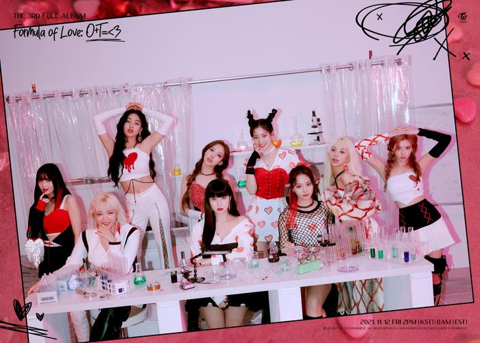

New Songs
Posted by: Bryan I
Joined : Nov 1, 2021
Nov 20, 2021

TWICE akhirnya melakukan comeback dengan merilis album terbaru yang diberi judul “Formula Of Love: O+T= <3” pada Jumat (12/11/2021). Untuk full album ketiga mereka kali ini, TWICE memilih SCIENTIST untuk menjadi lagu utamanya.
Album terbaru TWICE ini memiliki total 17 lagu, termasuk lagu dari sub unit yang dibagi menjadi tiga kelompok. Jihyo, Sana, dan Dahyun menyanyikan lagu PUSH & PULL, Jeongyeon, Mina, dan Tzuyu untuk lagu berjudul 1,3,2, sedangkan Nayeon, Momo, dan Chaeyoung membawakan lagu berjudul HELLO.
TWICE juga memasukkan lagu berbahasa Inggris pertama mereka yang berjudul The Feels. Namun, untuk album ini lirik lagu The Feels dibawakan dengan lirik berbahasa Korea.